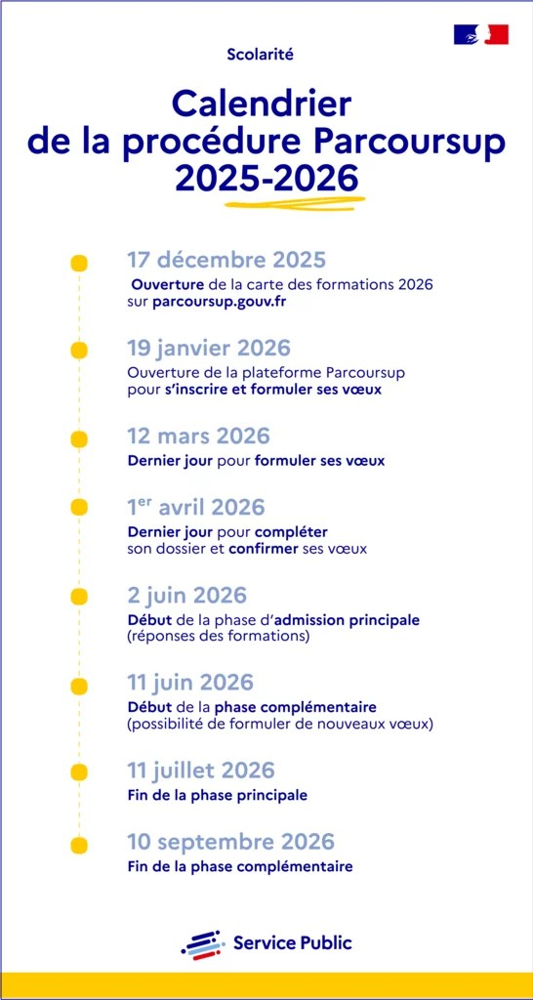
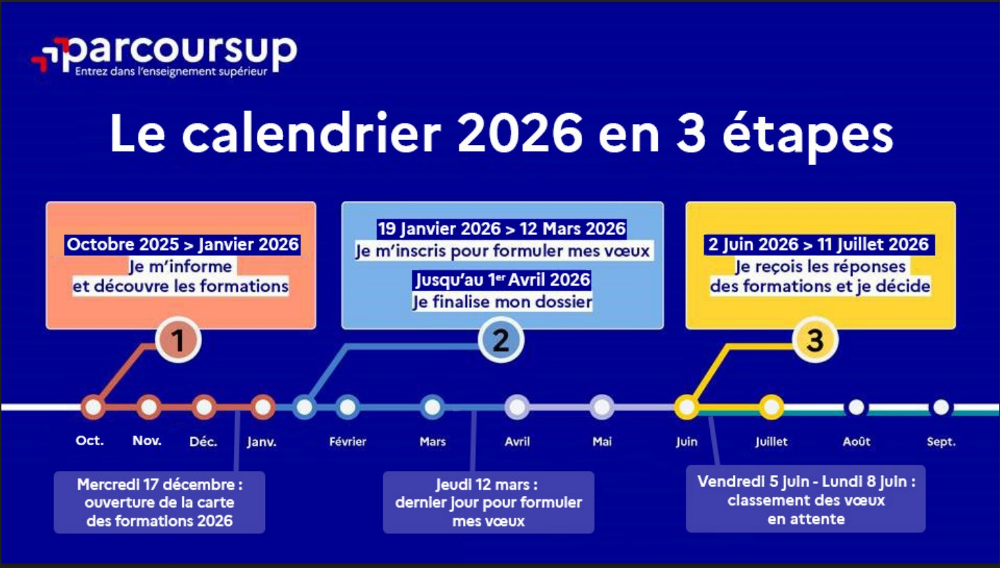

Si vous êtes un étudiant en terminal et que vous souhaitez découvir nos programmes, vous êtes alors concernés par Parcoursup.
Chaque année, des centaines d'étudiants réussissent leur admission chez Efrei Paris. Pour vous aussi maximiser vos chances, nous vous invitons à bien préparer votre candidature en amont.
Cependant, ne vous inquiétez pas. En suivant ces étapes dans l'ordre et en respectant les dates clés, votre parcours d'admission se déroulera de façon sereine et organisée.
Voici les étapes à respecter afin de poursuivre votre admission sur Parcoursup :


Si vous avez d'autres questions, veuillez vous réferrez au site officiel de Parcoursup.
Lien vers Parcoursup